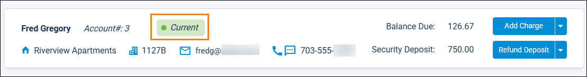

Source: https://rmxhelp.rentmanager.com/Topics/Express/KB/TWA-Account-No-Longer-Active.htm
Account No Longer Active Message in Tenant Web Access (TWA)
When attempting to log in to Tenant Web Access (TWA), tenants can sometimes encounter an Account No Longer Active error. In most cases, this error indicates that the tenant's account has a status of Past and that they have had that status for a longer time than allowed by system web preferences. To resolve the issue, you can extend a Past tenant's TWA access, change your system web preferences to allow for a longer access period, or, if applicable, update inaccurate lease information to ensure the tenant has the correct status.
Step 1: Verify and Update Tenant Status
Related Privileges
| Group | Privilege | Column |
|---|---|---|
| Tenants/Prospects | Tenants | View, Edit |
| Modify tenant movein/moveout dates | Enabled |
For more information, refer to Control User Access.
To begin troubleshooting this error, review the affected tenant's account details. Doing so allows you to determine if relevant information is accurate and correct it as needed.
To review a tenant's status, do the following:
-
Go to
 arrow_forward Rental Info arrow_forward General arrow_forward Tenants and select a tenant.
arrow_forward Rental Info arrow_forward General arrow_forward Tenants and select a tenant.
The tenant's details page displays. -
At the top of the details page, examine the tenant's status badge. It displays one of three statuses (Past, Current, Future) based on the Move In and Move Out dates on the tenant's most recent lease.

Status Description Current
The tenant's Move In date is on or before the present date and their Move Out date is blank or one or more days in the future.
Future
The tenant's Move In date is blank or one or more days after the present date.
Past
The tenant's Move Out date is on or before the present date.
-
On the Leases tile, review the Move In and Move Out dates of the most recent lease for accuracy. If one of the dates is incorrect, update the lease details with correct information. For example, if a tenant's Move Out is supposed to be 10/31/2025, but was erroneously entered as 10/31/2024, update the field to accurately reflect the lease. For more information, refer to Lease Details (Page).
After updating a tenant's lease with accurate information, invite them to attempt to log in again. If the issue was caused by inaccurate Status, the tenant should now be able to log in without error. However, if the tenant is still unable to log in, or if you determine that the tenant's Move In date, Move Out date, and Status are correct, proceed to the next troubleshooting step.
Step 2: Review and Update System Web Preferences
Related Privileges
| Group | Privilege | Column |
|---|---|---|
| System | System Web Preferences | Enabled |
For more information, refer to Control User Access.
The system web preference Past tenants remain active for X days after move out determines the number of days after a tenant's Move Out date that a tenant can still access their TWA account.
To review this preference, do the following:
-
Go to
arrow_forward  Administration, then go to .
Administration, then go to . -
In the General tile, examine the Past tenants remain active for X days after move out field.
-
Optionally, update this field to give tenants more time to access TWA after their Move Out date. For example, if today's date is 12/01/2026, the affected tenant has a Move Out date of 10/31/2026, and the field is set to 30, the tenant receives the Account No Longer Active error when logging in. If you extend the number of days to 31, the tenant can to log in today.
More Information
The Past tenants remain active for X days after move out field can be set to a maximum of 60 days and affects all tenants in your database. Instead of making system-wide changes, you can extended access for individual tenants on their Web Access Settings pop-up as outlined in the next troubleshooting step.
-
After saving any changes, invite the tenant to attempt to log in again. If their Move Out date meets the criteria set in system web preferences, the tenant should now be able to log in without error.
Step 3: Extend TWA Access
Related Privileges
| Group | Privilege | Column |
|---|---|---|
| Tenants/Prospects | Tenants | View, Edit |
For more information, refer to Control User Access.
If a tenant's Move Out date is accurate and falls outside of the 60-day maximum allowed by system web preferences or you do not wish to update the maximum allowed for all tenants in the system, you can extend the individual tenant's access to resolve their Account No Longer Active error. Doing so allows them to view account details and make payments in TWA.
To extend a tenant's access, do the following:
-
Go to
arrow_forward Rental Info arrow_forward General arrow_forward Tenants and select a tenant.
The tenant's details page displays. -
On the action bar to the right, click
 arrow_forward TWA Settings.
arrow_forward TWA Settings.
The Web Access Settings pop-up displays. -
To the right of the TWA Access Expired badge, click
.More Information
A
displays if all the following conditions are met:-
The Balance Due shown on the tenant's scoreboard is greater than 0.
-
On the tenant's Miscellaneous tile, Don't Allow TWA Payments is unchecked.
-
The tenant's Status is set to Past.
-
The tenant's Move Out date is past the days allotted in the Past tenants remain active for X days after move out field in system web preferences. For more information, refer to Tenant Web Access General (System Web Preferences).
-
-
In the Extend TWA Access pop-up, click Extend Access.
The tenant can access TWA until their Balance Due is zero or until six months have passed without a login.